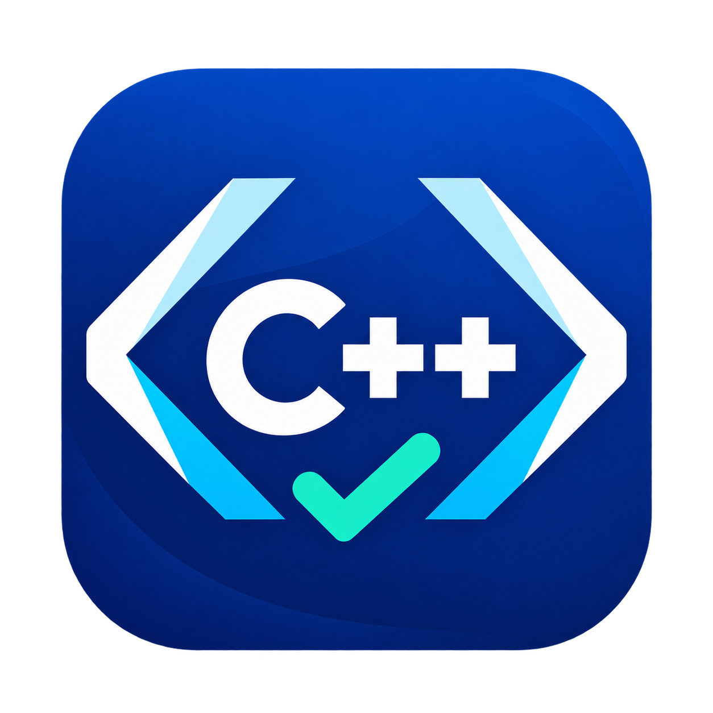
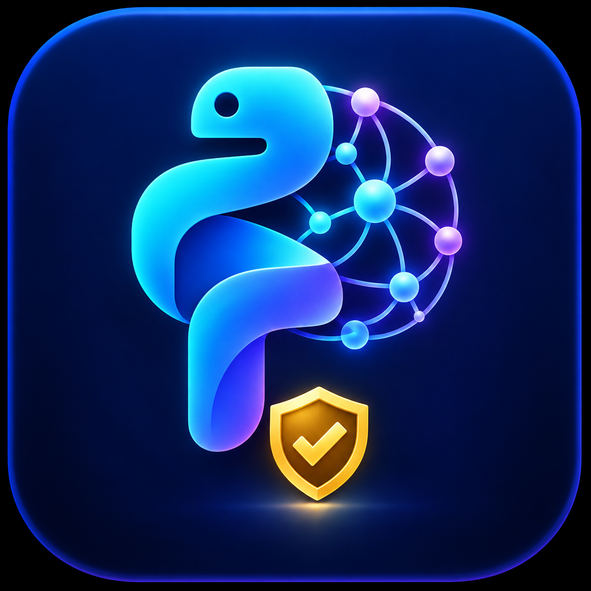

코드빚다 by Codepretender
직접 만들며
배우는 코딩.
코드를 작성하고 실행하며, 나만의 답을 완성하는 경험.
실습부터 과제와 시험까지 하나의 흐름으로 이어갑니다.

코드빚다 : C++
포인터부터 클래스까지.
코드를 실행하며 동작을 이해합니다.
기능과 앱 화면 살펴보기 →
코드빚다 : Java
문법에서 객체지향까지.
문제를 풀며 프로그램을 완성합니다.
기능과 앱 화면 살펴보기 →

코드빚다 : AI
텐서 연산부터 회귀와 그래프까지.
결과를 보며 데이터의 원리를 익힙니다.
기능과 앱 화면 살펴보기 →